Forbidden Peak North Ridge
- North Ridge, III, 5.6
- August 11, 2002
Summary: Dan and I got a 3 am start at the trail-head, climbed the excellent North Ridge, descended the West Ridge, and returned to the trail-head at 7:30 pm for a long but exciting day.
Dan Smith and I found ourselves with one free day last weekend, and with the good weather forecast we decided to try something big for a day trip. We’d heard great things about the North Ridge of Forbidden Peak. That climb gives you the chance to visit a large part of the mountain and it’s surroundings. We chose to climb the complete North Ridge, which is usually skirted by climbing a 40+ degree snow face to meet the upper ridge. I decided to wear hiking boots and aluminum crampons, because most of the technical terrain would be on rock. We brought an 8.8 mm rope that could be doubled on the rock, and a 7 mm static rappel line. A light rack, some food, and we were hiking up from the truck at 3 am Sunday morning.
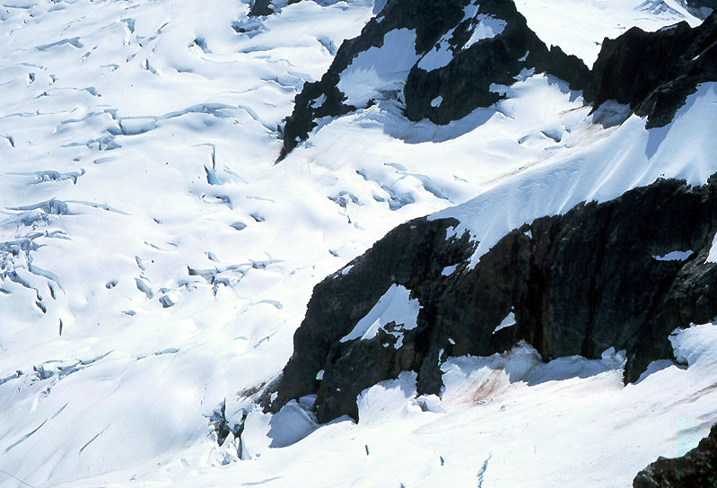
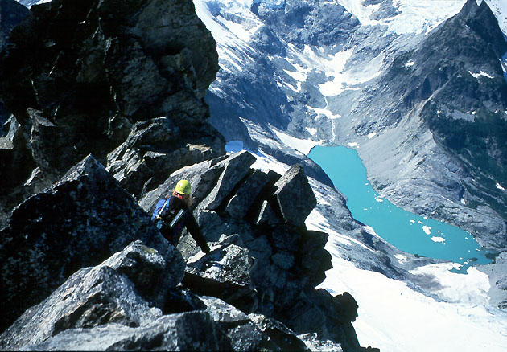
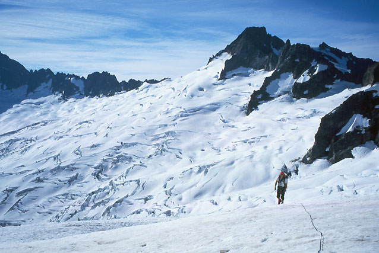
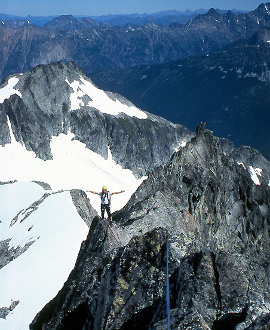

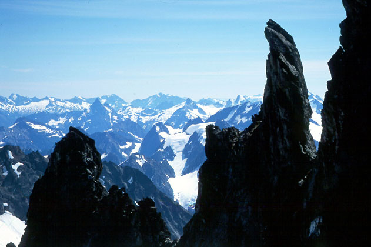
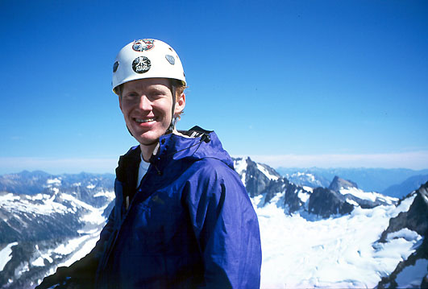
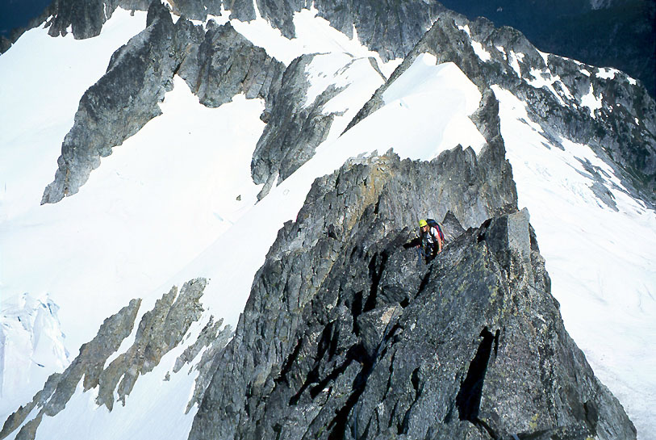
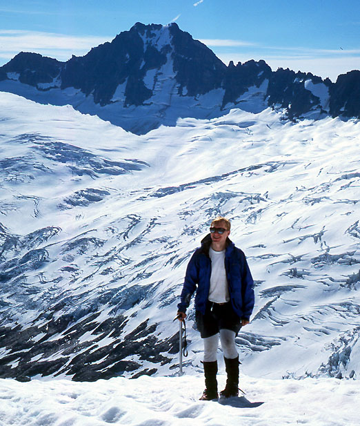
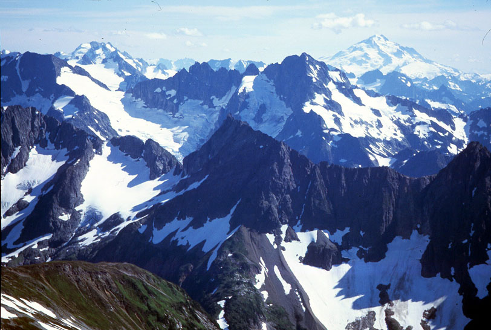
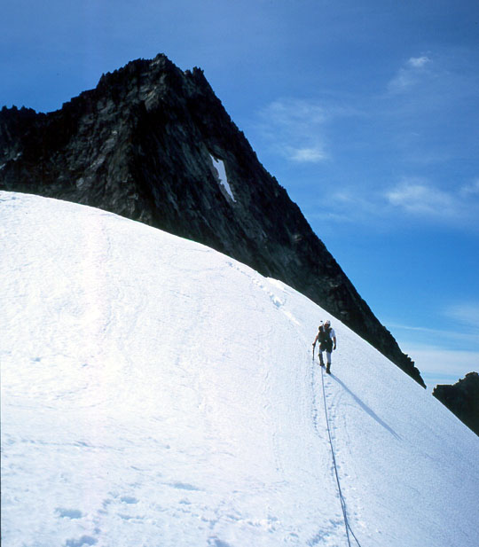
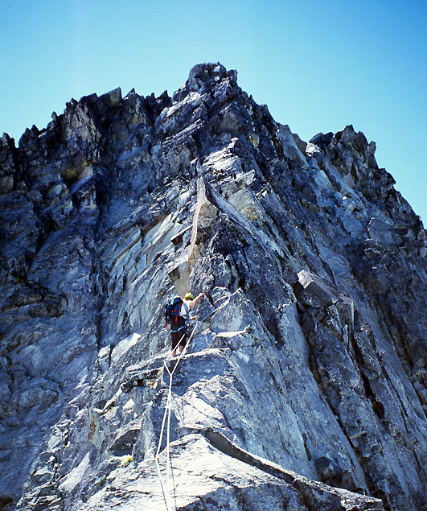
We made good time, hiking up the dark and steep trail, but Pilgrim’s Progress abruptly stopped at the fresh avalanche debris. A wide swath of forest had been wiped out during the winter. Dim headlamps eventually lost the way. Dimmer memories asserted that climbing straight up would intersect the trail again (wrong). Thus began a Calvin and Hobbes adventure of balancing on logs, crashing through bushes, pulling on dubiously attached limbs and stumbling across creeks.
“What is our purpose?”
“What kind of world is this?”
The great existential questions supplied background music to the acrobatic struggle. We didn’t want to squander so much energy, but as we climbed I felt kind of proud. We always admire the pioneers (and put ourselves down correspondingly, and rightly), knowing how much they did without trails. But here we were in the dark without a trail, going on stubborn determination to reach the alpine zone.
We finally reached moraines below the Quien Sabe Glacier, hiking quickly in a cold wind. Wet slabs reminded me of Mt. Goode two weeks before. Crampons eased the hike across the glacier to Sharkfin Col. A party of four heading to Sharkfin Tower gave some good advice about the Col. Nelly said “Climb the snowfinger right of the col until the rock turns gray near it’s head. Turn left into this short rock gully to find rappel slings. A single rope rappel will reach the Boston Glacier.” Nelly was a fine fellow to dispense such good advice!
The wind died on the Boston Glacier, where we roped up to cross the slots. We descended 400 feet to get around a rock buttress at it’s toe. Dan led through a small icefall for fun. “Neat!” I chortled. We admired Logan, Black and Buckner, smiling at our good fortune to be here on a blue sky day. The Boston Glacier is very beautiful. As we traversed to the North Ridge of Forbidden, we took in the deep Thunder Creek valley and steep gray slabs beneath the glacier. They were littered with ice, which came down even as we looked.
We walked slowly to a high glacial accumulation against the ridge. It was 9:15 am. Stopping for lunch, we marveled at our domain of deep valleys. I was fascinated by thinking that perhaps no one had ever been to a very lonely ridge below. We took some pictures here, the first of the trip. Feeling more energized, we tackled the climb to the ridge crest, scrambling over slabby but solid rock above the glacier moat. At the crest we had a whole new vista of peaks and glaciers to get lost in. Our ridge twisted away to the black summit, three-quarters of a mile away.
“Okay, let’s make some time” said Dan, and took off up the ridge. A mandatory series of tough and exposed moves required a belay. But the rock was solid, and the holds delightfully positioned (we rated this move 5.5 or 5.6). All the way up the route, I noticed that if I needed an edge at 45 degrees to assist in a stem – it was there. An in-cut hold to assist a mantle onto a smooth slab? There it is!
Dan suggested unroping for what looked like a long class 3 and 4 segment of the ridge, but I was reluctant, thinking that coiling and uncoiling would take a long time. So I led off slowly due to drag, and realized we were walking for stretches. Dan suggested unroping again, and I agreed. At once, the fun quotient increased, as we moved quickly and lightly over the solid, sunny rocks.
“I don’t know why people think the lower ridge is loose!”
“Me neither!”
Dialog continued in a similar vein until we came to a snowed-in section of the ridge, and I kicked steps up to the crest. We put crampons on for the short walk, then continued scrambling on the other side on steeper rock. Traversing around a corner, we found ourselves on an exposed ledge with difficult traversing moves ahead. I threw the rope up to Dan, perched like a cat in a tree. He led a traverse back to the crest, and I took the lead from his belay. A long traverse around towers on the west side of the ridge brought us to another snowfield. After this one, I led a long simul-climb up and down the ridge crest, eventually reaching the large snowfield that comes up from the Forbidden Glacier. We were already impressed by the ridge’s length. Shoulders, back and legs were tired when we skirted the cornice and stepped back onto rock for the last time.
I believe Dan led the upper ridge in one pitch, encountering some fun mid-5th class climbing rounding a tower on the left. The rock on the upper ridge is a bit cleaner. We saw a climber on the Direct East Ridge, standing between 2 gendarmes, possibly looking at us. I waved vigorously, but got no reply (except for the transmitted thought “who is that idiot?”). Dan sat down on the summit and belayed me the last 50 feet to a somewhat anticlimactic finish. “Is this the summit?” said Dan. There was a tower of equal height 50 feet to the west. There was no summit register, and no people – I was expecting hordes. Oh well, it was 2:45 in the afternoon, the hordes must have already left. We had spent over 4 hours on the ridge, stopping only to attach/detach crampons. It twisted like a dinosaur’s back at our feet. We were tired, happy, and thirsty.
At first Dan thought downclimbing unroped would be faster, but the exposure prompted a change of heart. “There’s no way I would do this without some kind of protection!” I remember saying at a particularly exciting hand traverse of a slab. We got to a rap station and made 3 or 4 single-rope rappels, then scrambled down to snow at the Col.
A double rope rappel proved to be a mistake, as the ropes tangled so bad it took Dan 20 minutes to unwind them (the 7 mm rope is very prone to this). I got to sit and look around at the views - it was a real luxury. The next rappel took me over a moat. I continued past an obvious anchor on the right side of the couloir, but couldn’t make it to the next one. Here I made a great mistake. I pulled one end of the rope and down-climbed to the next anchor for the next rappel. Dan was already downclimbing the couloir, suggesting I do the same. But I was tired and wanted to make a final rappel over a ‘schrund. As I rappelled I lost my balance and swung into the large moat. My foot caught between ice and rock and soon ended up over my head, since it was difficult to come to a full stop free-hanging on such thin rappel lines. I wrestled with my foot, losing my ice axe to the deep moat in the process. I had wedged it between my back and my pack, never expecting to end up in such a position. “Oh no!” I said, alarming Dan who was waiting below.
I got situated in the moat, and soon realized I couldn’t rappel any farther - the ropes had gotten caught on something deep inside the dark cavern between ice and rock. Flipping the ropes this way and that, occasionally pulling very hard, I couldn’t free them. I had to think of a way to get out and safely down the couloir. At Dan’s suggestion, a picket became my axe. I carefully put on crampons, taking extra time to make sure I didn’t compound my existing errors.
Soon enough, I found something other than self-disgust to occupy me. I carefully climbed in the moat, picket in hand (attached with a sling!) and reached a cliff where the rock dropped 100 feet to slabs above the glacier. The hard snow in the gully overhung slightly, but by chopping some handholds with the picket I was able to stem up over this great gulf of air enough to reach the top of the snow. Another handhold, then the buried picket protected the crucial move that got me up onto the snow. Dan offered what encouragement he could, and watched as I traversed the gully to good tracks from his downclimb. I climbed down very methodically, working up a great sweat by the time I got down to Dan’s position. Dan had continued ahead, finding a way into another moat and out the other side. I was able to traverse this moat by chopping handholds. Now we had easy snowfields and occasional crevasses the rest of the way. Later I slipped on a wet slab, scraping down for 10 feet. “This is a bad day for you, isn’t it Michael?” Dan said. I had to agree vigorously…
I continued to beat myself up on the quick hike down. Everything went so well, until it went so wrong! Following Dan’s advice to downclimb would have prevented the whole debacle, but I didn’t see how I could turn that observation into a general rule. Being more aware of the hazards inherent in rappelling parallel to a moat was something I could promise to do. I was completely uninjured, but my pride and confidence were a bit shaken. That is probably a good and necessary thing.
Anyway…
We chatted with some climbers camping on slabs below the glacier, and continued quickly down the trail. We easily crossed the avalanche debris. Dan took off running, and I stopped for some water, and a good final look at the mountains in the late afternoon light. “They don’t care about me,” I thought. “But I love them just the same.”